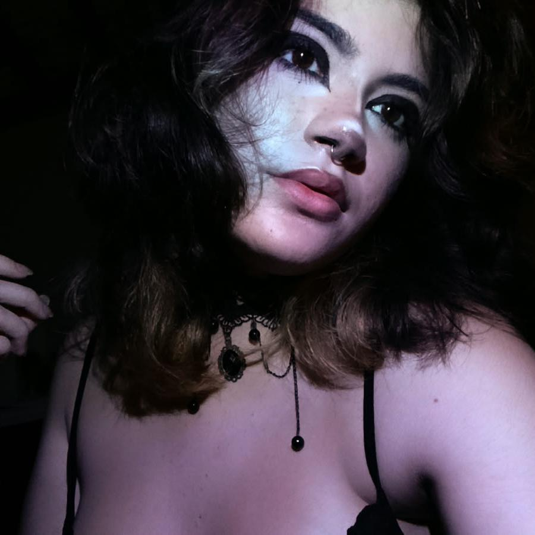
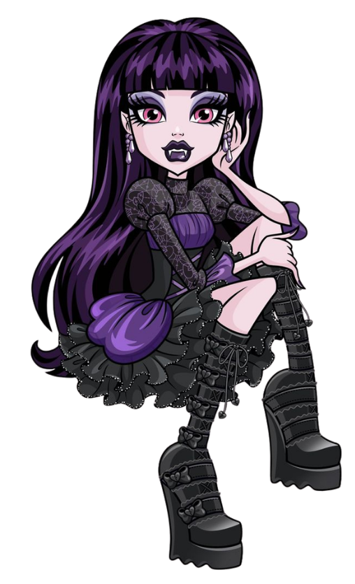
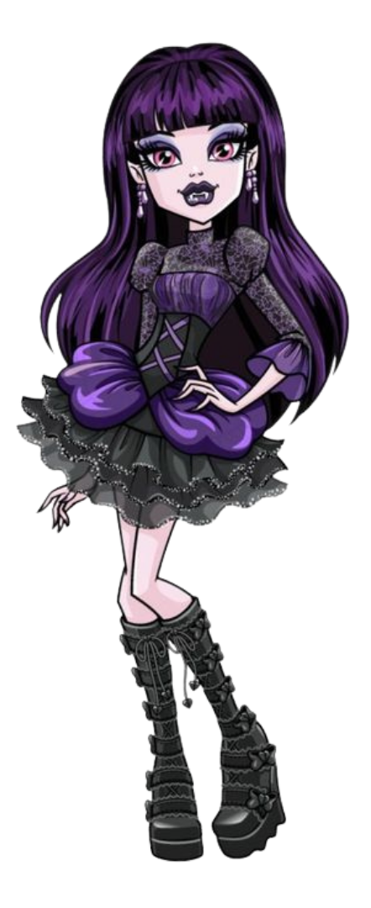
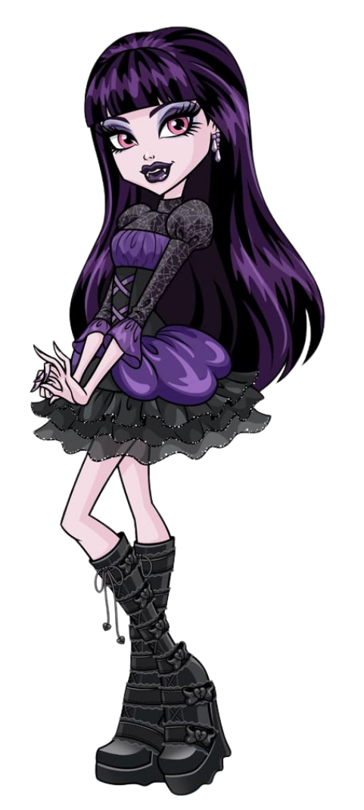
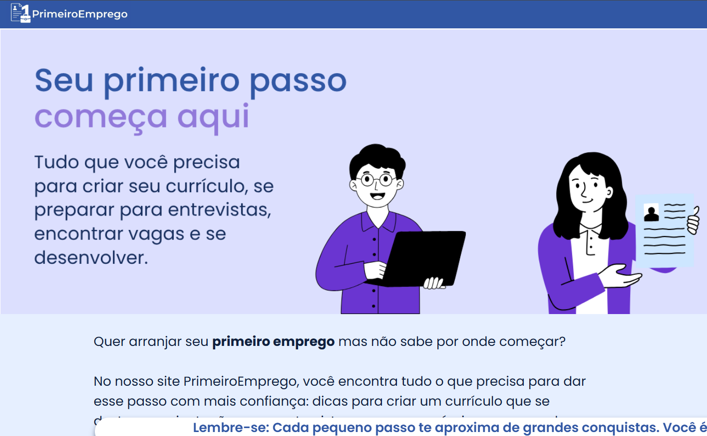

Nathe Inostroza Westphal
Técnico de Informática
2/3 TI
HTML/CSS/JS
Olá, meu nome é Nathe! Quer conhecer meu trabalho? Clique abaixo!

Meu nome é Nathe e sou estudante do curso técnico em Informática pelo SENAI. Gosto de transformar minhas ideias em projetos visuais e funcionais.
Durante minha formação, venho desenvolvendo conhecimentos em desenvolvimento web, programação e criação de interfaces, colocando em prática através de projetos e trabalhos acadêmicos.
Sou uma pessoa criativa e sempre busco evoluir.

Meu principal objetivo é aprimorar meus conhecimentos em programação e desenvolvimento web, e, explorar novas tecnologias.
Também busco oportunidades para colocar meus conhecimentos em ação, aprender com novos desafios e construir uma trajetória profissional na área de tecnologia.

Criatividade na criação dos meus projetos;
Facilidade de aprendizado com conceitos e ferramentas ao longo dos projetos;
Colaboração em trabalho em equipe, ouço ideias e contribuo para alcançar o objetivo comum;
Interesse na área de tecnologia, na programação, desenvolvimento web e criação de projetos digitais;
Organização e proatividade diante a desafios.

PrimeiroEmprego